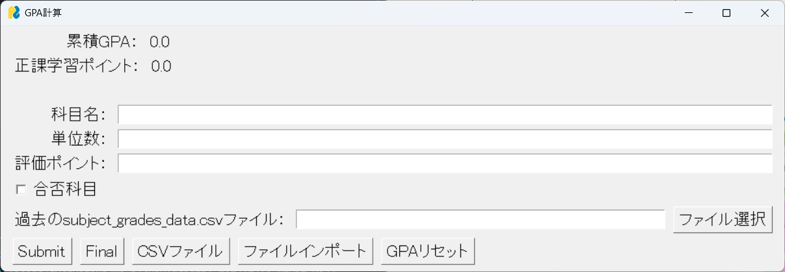

- home
- GPA_calc
GPA計算システム
システム画面

概要
金沢工業大学のGPA及び正課学習ポイントを計算するためのシステムです。
入力データとして、科目名、単位数、評価ポイント(S,A,B,C,D,F)を入力することにより科目を登録することができます。
また、システム下部に表示されているcsvファイルを押下することにより、成績情報をcsvファイル化し保存することができる。
この出力されたcsvファイルを次回成績入力時にファイル選択から入力することにより、これまでの成績情報を入力することなく、これまでの累積GPAや正課学習ポイントを計算することができます。
2025/2/26 にシステム改修を行い、csvファイルを用いることなく、データベースを用いて成績情報を入力することができるようになりました。
また、ログインすることにより瞬時にこれまでの成績情報にアクセスすることができるようになりました。
プロジェクトツリー
C:.
├─firebase_setting
│ ├─.env
│ ├─firebase.py
│ └─firebase_api.json
├─function
│ ├─gui.py
│ ├─logic_function.py
│ └─state.py
├─node_modules
│ └─...(省略)
├─KIT_GPA_calc.py
├─package.json
├─package-lock.json
├─.gitignore
├─subject_grades_data_guest.csv
└─README.md
ソースコード
Githubを参照
使用技術・ライブラリ
Python
PySimpleGUI
pandas
csv
dotenv
firebase
firebase-admin
webbrowser
npm